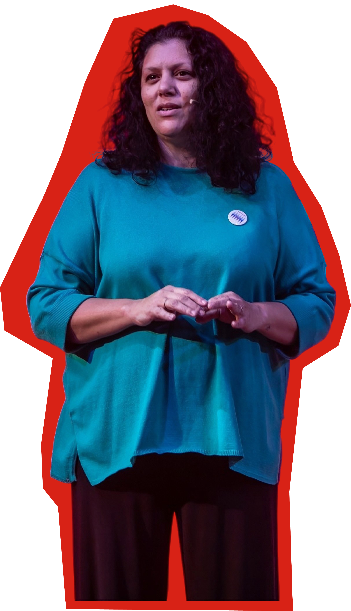

Oratoria
Hablar con presencia, sin perder autenticidad.
Clubes TED‑Ed Benei Tikva
El primer Club TED‑Ed de Benei Tikva.
Diez semanas. Una charla. Tu voz.
01 / 06
02 / 06
03 / 06
04 / 06
05 / 06
06 / 06
— Para quién es
Sos estudiante de secundaria.
Tenés una pregunta que no te deja dormir.
Querés que tu voz se escuche.
No necesitás experiencia previa. Solo ganas.
Programa orientado a jóvenes de la comunidad judía. ¿No sabés si calificás? Escribinos a contacto@tedbeneitikva.org y lo averiguamos juntos.
— Qué vas a aprender
Hablar con presencia, sin perder autenticidad.
Convertir una idea en una historia que se recuerda.
Cuestionar antes de afirmar.
Inspirar sin imponer.
De la intuición al concepto sólido.
Decir más con menos.
Diseñar momentos, no slides.
Que los nervios trabajen para vos.
— Cómo funciona
Diez encuentros. Pensamiento, escritura, voz. La caja de herramientas de un speaker TED.
Cada participante, un mentor. Acompañamiento real para encontrar tu ángulo.
Desarrollás el tema que te quema. No el que suena lindo: el que necesitás decir.
Iteración hasta que la charla sea inconfundiblemente tuya.
Escenario. Público real. Círculo rojo. Tu momento.
— Speakers




Fotos del programa Clubes TED‑Ed Argentina. Pronto, las nuestras.
— FAQ
No. Lo único indispensable es que tengas ganas de decir algo. El resto lo construimos juntos en las diez semanas.
Es gratis. El Club existe gracias a Benei Tikva y a las organizaciones aliadas.
Diez semanas. Un encuentro por semana. La última semana cerrás con tu charla TED frente a público real.
Das tu charla TED. Iluminación, escenario, círculo rojo. Las charlas se filman y quedan publicadas para que las puedas compartir.
100%. La cohorte funciona mejor cuando hay química entre los participantes. Anotate con quien quieras.
Escribinos a contacto@tedbeneitikva.org y lo averiguamos juntos. Sin vueltas.
Sí. Buscamos compromiso, no perfección. Si tenés algo para decir y tiempo para dedicarle, tenés todas las chances.
Adolescentes y jóvenes en edad de secundaria.
— Cohorte 2026 · Cupos limitados
Tarda 3 minutos. Lo importante es que te animes.
— Para escuelas y organizaciones
Si dirigís una escuela, un movimiento juvenil o una organización comunitaria y querés que tus jóvenes vivan esta experiencia, podemos coordinar una cohorte específica para ustedes.
Quiero traer TED‑EdA futuro este espacio va a mostrar a las escuelas y organizaciones aliadas.
— Seguinos
El detrás de escena, en vivo.